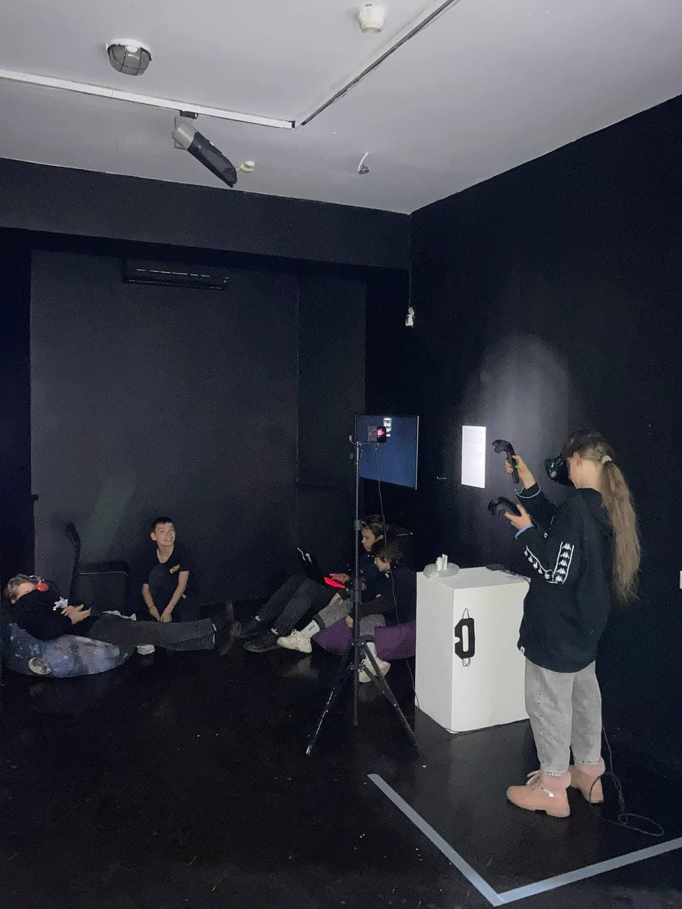
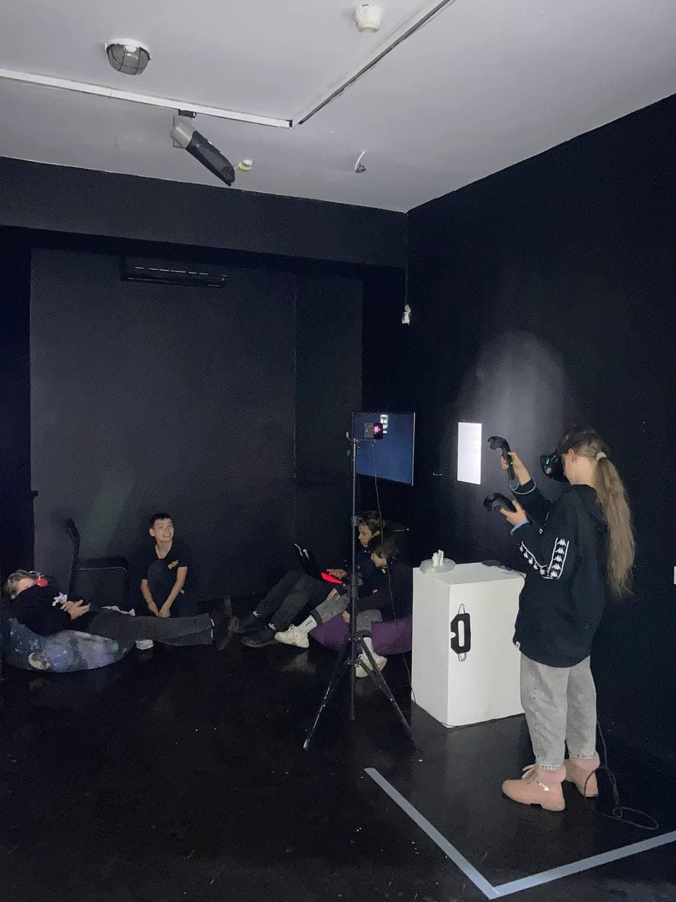

Sluchilos'
A spatial sound installation employing computer vision methods to analyze live video data streams and speech synthesis algorithms. The work is realized as a playground, a "playroom," constructed within the fixed competition dimensions of 5 × 5 meters.
"If I do not see it, then it does not exist." It is easy to ignore processes whose effects cannot be seen or physically sensed. But is it still possible to turn away from the problems of algorithmic recognition when "observation without an observer" is verbally articulated, remaining just as invisible and all-pervasive?
Artists:
Viktoria Volokitina
Tatyana Zobnina
Ksenia Gorlanova
Alexander Pogrebnyak
Exhibited:
MMOMA (Moscow Museum of Modern Art), Moscow, 2023
Tsifergaus Digital Art Gallery, Saint Petersburg, 2025
…Freeze in Place!
Audiovisual interactive installation. Our planet is in constant motion. Geological layers shift through space, forming canyons, lakes, and seas. Glaciers carve through mountains, creating plains suitable for life. What we usually perceive as inert plays a crucial role in shaping the planet's contemporary appearance.
The project "…Freeze in Place!" focuses on the evolution of the geological landscape. A full-scale projection immerses viewers in the space of geological processes: the formation and destruction of mountains, the emergence of fissures, cliffs, and plains under the influence of external forces. Rotate the controller and observe the changes unfolding on the screen, from the speed of time's flow to the transformation of weather phenomena.
The ability to control nature reminds viewers of the importance of ecological awareness and the need for a thoughtful, attentive relationship with the environment.
Artists:
Viktoria Volokitina
Ksenia Gorlanova
Alexander Pogrebnyak
Exhibited:
Evolution, Tsifergaus Gallery, Saint Petersburg, 2024
Development:
Hello Computer
All in All
Abstract two-dimensional physically drawn watercolors and Neural Radiance Field technology were combined to create a connection from the first to the last artwork. The new technologies allowed us to visualize the experience of experiencing flat images as a whole.
For this project, we did a lot of experimentation to create our own pipeline to work with camera trajectories and train models. Initially, we were unsure of the end result. We cause a glitch and force the neural network to build something three-dimensional and real from something that is not.
Artists:
Nikita Krutoy
Viktoria Volokitina
Exhibited:
Zdes’ Gallery na Taganke, Moscow, 2023

 

For All Exists Infinity
A VR game-based art project in which viewers can influence the virtual world by creating traces of their presence. These traces function as a form of communication with the in-game artificial intelligence.
Artists:
Leonid Gremyachikh
Viktoria Volokitina
Exhibited:
Khodynka Gallery, Moscow, 2021

The Architecture of Consciousness
It's one of my first projects where I explore affecting people's feelings by virtual reality. Installation created using Oculus Development Kit 2 and TouchDesigner software.
The work immerses you in an impossible space with an eternal oscillation between the calmness of existence and the peak of anxiety. The virtual space makes you feel an illusion of control over the surrounding space.
Artist:
Viktoria Volokitina
Exhibited:
METAXIS, Media Arts Festival, 2018